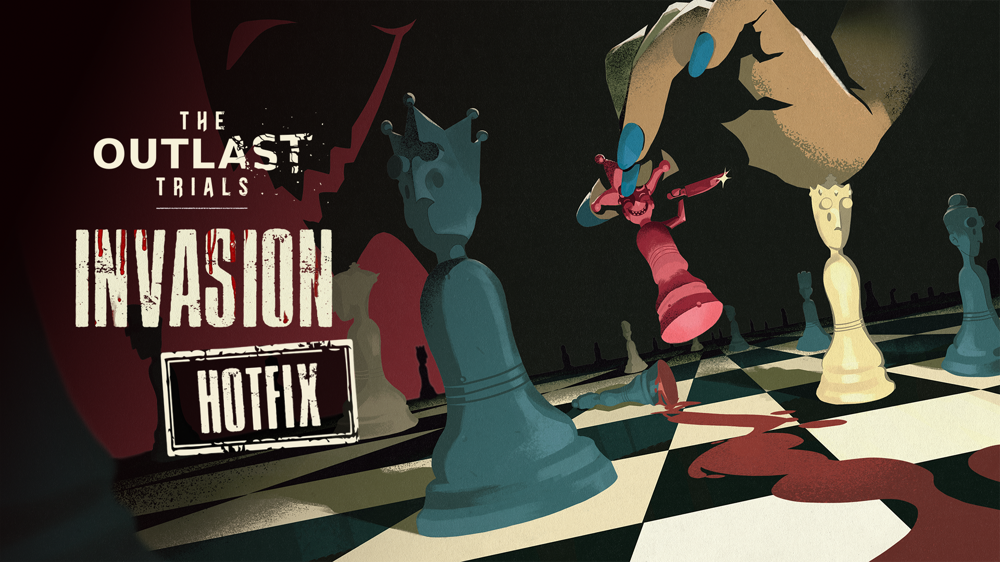
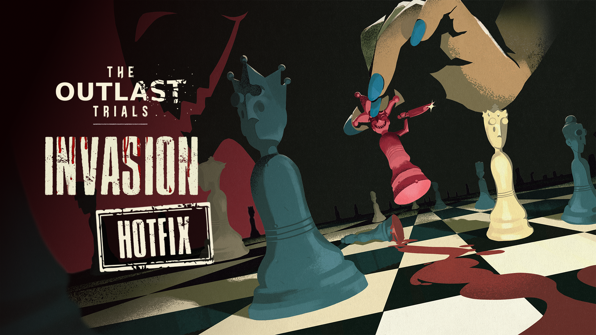

CHARACTERS
Each subject is a participant in Murkoff’s “Re-Education” program — stripped of identity, molded into obedience.
Psychological conditioning, behavioral modification, and controlled exposure to trauma have revealed fascinating results.
Proceed with caution: not all subjects respond as intended.


 
